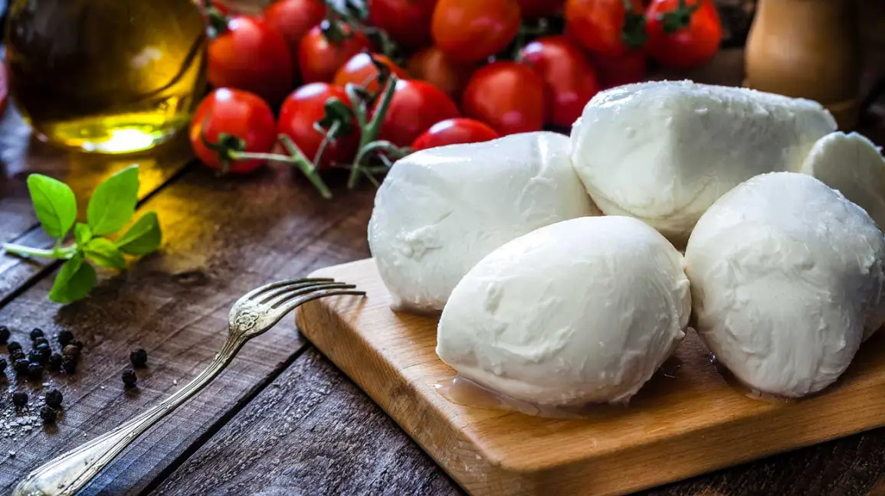

Fresh cheeses
Young, moist, and mild. Fresh cheeses skip aging entirely: the curds
are drained, maybe lightly salted, and sent straight to the table.
They taste of milk itself, which is the whole point.
Character: soft, spreadable or springy, high in moisture. Flavors are
delicate — milky, lemony, faintly sweet. There is nowhere for a flaw
to hide, so freshness is everything.
Notable members: mozzarella, ricotta, chevre, queso fresco, and
mascarpone.
How to enjoy: eat within days. Tear mozzarella over tomatoes, spoon
ricotta onto toast with honey, crumble chevre into a salad. Fresh
cheese belongs to summer.
Did you know? Real mozzarella di bufala is made from the milk of
water buffalo, whose herds were brought to Italy over a thousand
years ago.